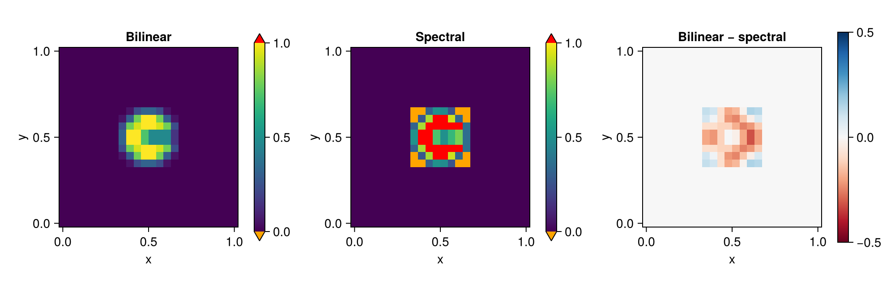

Remap and interpolate
Spectral-element nodes are not uniformly spaced within an element, and the elements of a cubed sphere are not aligned with latitude and longitude, so output is interpolated to a regular grid before it is plotted or written. ClimaCore provides a fast, element-local interpolation for diagnostics and plots; conservative remapping, which preserves areas and integrals and is needed for exchanges between coupled component models, goes through TempestRemap. This page covers the interpolation, with pointers to the rest.
How the interpolation works
Within the element that contains a target point, the field is evaluated by Lagrange interpolation through the element's nodes, in the barycentric form of [19], equation (3.2), with the same polynomial degree as the field (Remapping.SpectralElementRemapping, the default). This is exact for the polynomial the field represents, so a smooth field is interpolated to spectral accuracy, and it overshoots near a discontinuity like any high-order interpolant. Remapping.BilinearRemapping interpolates bilinearly within the 2 × 2 block of nodes around the target point instead: second-order accurate, but bounded by the surrounding nodal values, so no new extrema appear. In the vertical, values are interpolated linearly between the two nearest levels; below the lowest level and above the highest, the nearest level's value is used.
Prerequisites
import ClimaCore: Remapping, Geometry. Target points are arrays of Geometry.Points: LatLongPoint on the sphere, XYPoint (or XPoint) on a plane, ZPoint for heights.
Steps
For a one-off interpolation, call
Remapping.interpolateon the field. With no coordinates given, a uniform target grid is chosen from the field's space (latitude–longitude on the sphere,x–yon a plane, withzresolutionlevels in the vertical) and the interpolated values are returned as anArray(or aCuArrayon a GPU):interpolated = Remapping.interpolate(field) interpolated = Remapping.interpolate(field; hresolution = 100, zresolution = 50)Remapping.default_target_hcoords(space)andRemapping.default_target_zcoords(space)return the target points of that default grid, for axis labels.To choose the target points, pass them as arrays. The output is defined on the Cartesian product of the horizontal and vertical targets:
longs = range(-180.0, 180.0, 21) lats = range(-80.0, 80.0, 21) zs = range(0.0, 1000.0, 21) hcoords = [Geometry.LatLongPoint(lat, long) for long in longs, lat in lats] zcoords = [Geometry.ZPoint(z) for z in zs] interpolated = Remapping.interpolate(field, hcoords, zcoords) # size 21 × 21 × 21The horizontal-only and vertical-only forms omit the coordinates the space does not have. On a Cartesian plane,
Remapping.interpolate_array(field, xpts, ypts)accepts ranges ofXPoints andYPoints directly.For repeated interpolation onto the same targets, in a diagnostics loop or for several fields, build a
Remapping.Remapperonce. It stores the target points, the interpolation weights, and scratch space, and serves every field on its space:remapper = Remapping.Remapper(space, hcoords, zcoords) interpolated = Remapping.interpolate(remapper, field) Remapping.interpolate!(interpolated, remapper, field) # in placeSeveral fields on the same space are interpolated in one call,
interpolate(remapper, [field1, field2]), which returns an array with a leading field dimension. Thebuffer_lengthkeyword of the constructor sets how many fields one call processes at once; more fields than that are handled in batches.Choose the horizontal method where it matters. Both
interpolateandRemappertakehorizontal_method = Remapping.BilinearRemapping()for a bounded interpolation of fields with sharp gradients, as the comparison below shows on a slotted cylinder.
Distributed runs
Each MPI process builds its own Remapper for the target points that fall in its elements. interpolate gathers the result on the root process and returns it there; on the other processes, it returns nothing. interpolate! follows the same rule: its destination must be an array of the device's array type on the root process and nothing elsewhere.
Spectral versus bilinear interpolation
A slotted cylinder on a plane of 6 × 6 elements with Nq = 4, interpolated to a 24 × 24 grid by both methods. The spectral interpolant overshoots and undershoots at the discontinuity (marked red and orange); the bilinear interpolant stays within [0, 1].
using ClimaComms
ClimaComms.@import_required_backends
using ClimaCore:
Geometry, Domains, Meshes, Topologies, Spaces, Fields, Remapping, Quadratures
using CairoMakie
CairoMakie.activate!(type = "png")
nelems, Nq, n_interp = 6, 4, 24
domain = Domains.RectangleDomain(
Geometry.XPoint(0.0) .. Geometry.XPoint(1.0),
Geometry.YPoint(0.0) .. Geometry.YPoint(1.0),
x1periodic = true, x2periodic = true,
)
mesh = Meshes.RectilinearMesh(domain, nelems, nelems)
topology = Topologies.Topology2D(ClimaComms.context(), mesh)
space = Spaces.SpectralElementSpace2D(topology, Quadratures.GLL{Nq}())
# A disk of radius 0.15 about (0.5, 0.5) with a slot cut upward from its center.
function slotted_cylinder(x, y)
in_disk = (x - 0.5)^2 + (y - 0.5)^2 <= 0.15^2
in_slot = abs(x - 0.5) <= 0.025 && 0.5 <= y <= 0.65
return (in_disk && !in_slot) ? 1.0 : 0.0
end
coords = Fields.coordinate_field(space)
field = @. slotted_cylinder(coords.x, coords.y)
Spaces.weighted_dss!(field)
xpts = range(Geometry.XPoint(0.0), Geometry.XPoint(1.0), length = n_interp)
ypts = range(Geometry.YPoint(0.0), Geometry.YPoint(1.0), length = n_interp)
bilinear = Remapping.interpolate_array(
field,
xpts,
ypts;
horizontal_method = Remapping.BilinearRemapping(),
)
spectral = Remapping.interpolate_array(
field,
xpts,
ypts;
horizontal_method = Remapping.SpectralElementRemapping(),
)
x = [p.x for p in xpts]
y = [p.y for p in ypts]
fig = Figure(size = (1000, 330))
for (i, (title, data)) in enumerate((("Bilinear", bilinear), ("Spectral", spectral)))
ax = Axis(fig[1, 2i - 1], title = title, xlabel = "x", ylabel = "y", aspect = 1)
hm = heatmap!(ax, x, y, data'; colorrange = (0, 1), lowclip = :orange, highclip = :red)
Colorbar(fig[1, 2i], hm)
end
ax = Axis(fig[1, 5], title = "Bilinear − spectral", xlabel = "x", ylabel = "y", aspect = 1)
hm = heatmap!(ax, x, y, (bilinear .- spectral)'; colormap = :RdBu, colorrange = (-0.5, 0.5))
Colorbar(fig[1, 6], hm)
fig
Conservative remapping with TempestRemap
Conservative regridding between a cubed-sphere space and a latitude–longitude grid, which preserves the integral of the field and is what exchanges between coupled component models need, is a nonlocal operation that TempestRemap performs from mesh files and weight files. The companion package ClimaCoreTempestRemap writes the meshes and fields in the format it reads and applies the resulting weights.
Interpolating to pressure levels
Remapping.PressureInterpolator interpolates a field from the model's height levels to prescribed pressure levels, column by column, using a pressure field on the same space. The pressure field must live on cell centers; the field being interpolated may live on centers or faces of the same space.
pressure_levels = 100.0 .* [100.0, 250.0, 500.0, 850.0, 1000.0] # Pa, ascending
pressure_intp = Remapping.PressureInterpolator(pressure_field, pressure_levels)
field_on_p = Remapping.interpolate_pressure(field, pressure_intp)
Remapping.interpolate_pressure!(field_on_p, field, pressure_intp) # in place
Remapping.update!(pressure_intp) # after the pressure field has changed
Remapping.pressure_space(pressure_intp) # the space whose vertical coordinate is pressureThe interpolator first enforces that pressure decreases monotonically with height in every column (by a cumulative minimum), then interpolates linearly in pressure, holding the boundary value constant beyond the model's top and bottom. Pressure levels outside the model's range therefore receive the boundary value, not an extrapolation. The result lives on a new space whose vertical coordinate is pressure, so the Remapper above can then remap it to a latitude–longitude grid.